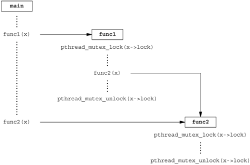

12.4. Synchronization AttributesJust as threads have attributes, so too do their synchronization objects. In this section, we discuss the attributes of mutexes, readerwriter locks, and condition variables. Mutex AttributesWe use pthread_mutexattr_init to initialize a pthread_mutexattr_t structure and pthread_mutexattr_destroy to deinitialize one.
The pthread_mutexattr_init function will initialize the pthread_mutexattr_t structure with the default mutex attributes. Two attributes of interest are the process-shared attribute and the type attribute. Within POSIX.1, the process-shared attribute is optional; you can test whether a platform supports it by checking whether the _POSIX_THREAD_PROCESS_SHARED symbol is defined. You can also check at runtime by passing the _SC_THREAD_PROCESS_SHARED parameter to the sysconf function. Although this option is not required to be provided by POSIX-conforming operating systems, the Single UNIX Specification requires that XSI-conforming operating systems do support this option. Within a process, multiple threads can access the same synchronization object. This is the default behavior, as we saw in Chapter 11. In this case, the process-shared mutex attribute is set to PTHREAD_PROCESS_PRIVATE. As we shall see in Chapters 14 and 15, mechanisms exist that allow independent processes to map the same extent of memory into their independent address spaces. Access to shared data by multiple processes usually requires synchronization, just as does access to shared data by multiple threads. If the process-shared mutex attribute is set to PTHREAD_PROCESS_SHARED, a mutex allocated from a memory extent shared between multiple processes may be used for synchronization by those processes. We can use the pthread_mutexattr_getpshared function to query a pthread_mutexattr_t structure for its process-shared attribute. We can change the process-shared attribute with the pthread_mutexattr_setpshared function.
The process-shared mutex attribute allows the pthread library to provide more efficient mutex implementations when the attribute is set to PTHREAD_PROCESS_PRIVATE, which is the default case with multithreaded applications. Then the pthread library can restrict the more expensive implementation to the case in which mutexes are shared among processes. The type mutex attribute controls the characteristics of the mutex. POSIX.1 defines four types. The PTHREAD_MUTEX_NORMAL type is a standard mutex that doesn't do any special error checking or deadlock detection. The PTHREAD_MUTEX_ERRORCHECK mutex type provides error checking. The PTHREAD_MUTEX_RECURSIVE mutex type allows the same thread to lock it multiple times without first unlocking it. A recursive mutex maintains a lock count and isn't released until it is unlocked the same number of times it is locked. So if you lock a recursive mutex twice and then unlock it, the mutex remains locked until it is unlocked a second time. Finally, the PTHREAD_MUTEX_DEFAULT type can be used to request default semantics. Implementations are free to map this to one of the other types. On Linux, for example, this type is mapped to the normal mutex type. The behavior of the four types is shown in Figure 12.5. The "Unlock when not owned" column refers to one thread unlocking a mutex that was locked by a different thread. The "Unlock when unlocked" column refers to what happens when a thread unlocks a mutex that is already unlocked, which usually is a coding mistake.
We can use pthread_mutexattr_gettype to get the mutex type attribute and pthread_mutexattr_settype to change the mutex type attribute.
Recall from Section 11.6 that a mutex is used to protect the condition that is associated with a condition variable. Before blocking the thread, the pthread_cond_wait and the pthread_cond_timedwait functions release the mutex associated with the condition. This allows other threads to acquire the mutex, change the condition, release the mutex, and signal the condition variable. Since the mutex must be held to change the condition, it is not a good idea to use a recursive mutex. If a recursive mutex is locked multiple times and used in a call to pthread_cond_wait, the condition can never be satisfied, because the unlock done by pthread_cond_wait doesn't release the mutex. Recursive mutexes are useful when you need to adapt existing single-threaded interfaces to a multithreaded environment, but can't change the interfaces to your functions because of compatibility constraints. However, using recursive locks can be tricky, and they should be used only when no other solution is possible. ExampleFigure 12.6 illustrates a situation in which a recursive mutex might seem to solve a concurrency problem. Assume that func1 and func2 are existing functions in a library whose interfaces can't be changed, because applications exist that call them, and the applications can't be changed. To keep the interfaces the same, we embed a mutex in the data structure whose address (x) is passed in as an argument. This is possible only if we have provided an allocator function for the structure, so the application doesn't know about its size (assuming we must increase its size when we add a mutex to it).
If both func1 and func2 must manipulate the structure and it is possible to access it from more than one thread at a time, then func1 and func2 must lock the mutex before manipulating the data. If func1 must call func2, we will deadlock if the mutex type is not recursive. We could avoid using a recursive mutex if we could release the mutex before calling func2 and reacquire it after func2 returns, but this opens a window where another thread can possibly grab control of the mutex and change the data structure in the middle of func1. This may not be acceptable, depending on what protection the mutex is intended to provide. Figure 12.7 shows an alternative to using a recursive mutex in this case. We can leave the interfaces to func1 and func2 unchanged and avoid a recursive mutex by providing a private version of func2, called func2_locked. To call func2_locked, we must hold the mutex embedded in the data structure whose address we pass as the argument. The body of func2_locked contains a copy of func2, and func2 now simply acquires the mutex, calls func2_locked, and then releases the mutex. If we didn't have to leave the interfaces to the library functions unchanged, we could have added a second parameter to each function to indicate whether the structure is locked by the caller. It is usually better to leave the interfaces unchanged if we can, however, instead of polluting it with implementation artifacts. The strategy of providing locked and unlocked versions of functions is usually applicable in simple situations. In more complex situations, such as when the library needs to call a function outside the library, which then might call back into the library, we need to rely on recursive locks. Figure 12.6. Recursive locking opportunityFigure 12.7. Avoiding a recursive locking opportunity
ExampleThe program in Figure 12.8 illustrates another situation in which a recursive mutex is necessary. Here, we have a "timeout" function that allows us to schedule another function to be run at some time in the future. Assuming that threads are an inexpensive resource, we can create a thread for each pending timeout. The thread waits until the time has been reached, and then it calls the function we've requested. The problem arises when we can't create a thread or when the scheduled time to run the function has already passed. In these cases, we simply call the requested function now, from the current context. Since the function acquires the same lock that we currently hold, a deadlock will occur unless the lock is recursive. We use the makethread function from Figure 12.4 to create a thread in the detached state. We want the function to run in the future, and we don't want to wait around for the thread to complete. We could call sleep to wait for the timeout to expire, but that gives us only second granularity. If we want to wait for some time other than an integral number of seconds, we need to use nanosleep(2), which provides similar functionality.
The caller of timeout needs to hold a mutex to check the condition and to schedule the retry function as an atomic operation. The retry function will try to lock the same mutex. Unless the mutex is recursive, a deadlock will occur if the timeout function calls retry directly. Figure 12.8. Using a recursive mutex
#include "apue.h"
#include <pthread.h>
#include <time.h>
#include <sys/time.h>
extern int makethread(void *(*)(void *), void *);
struct to_info {
void (*to_fn)(void *); /* function */
void *to_arg; /* argument */
struct timespec to_wait; /* time to wait */
};
#define SECTONSEC 1000000000 /* seconds to nanoseconds */
#define USECTONSEC 1000 /* microseconds to nanoseconds */
void *
timeout_helper(void *arg)
{
struct to_info *tip;
tip = (struct to_info *)arg;
nanosleep(&tip->to_wait, NULL);
(*tip->to_fn)(tip->to_arg);
return(0);
}
void
timeout(const struct timespec *when, void (*func)(void *), void *arg)
{
struct timespec now;
struct timeval tv;
struct to_info *tip;
int err;
gettimeofday(&tv, NULL);
now.tv_sec = tv.tv_sec;
now.tv_nsec = tv.tv_usec * USECTONSEC;
if ((when->tv_sec > now.tv_sec) ||
(when->tv_sec == now.tv_sec && when->tv_nsec > now.tv_nsec)) {
tip = malloc(sizeof(struct to_info));
if (tip != NULL) {
tip->to_fn = func;
tip->to_arg = arg;
tip->to_wait.tv_sec = when->tv_sec - now.tv_sec;
if (when->tv_nsec >= now.tv_nsec) {
tip->to_wait.tv_nsec = when->tv_nsec - now.tv_nsec;
} else {
tip->to_wait.tv_sec--;
tip->to_wait.tv_nsec = SECTONSEC - now.tv_nsec +
when->tv_nsec;
}
err = makethread(timeout_helper, (void *)tip);
if (err == 0)
return;
}
}
/*
* We get here if (a) when <= now, or (b) malloc fails, or
* (c) we can't make a thread, so we just call the function now.
*/
(*func)(arg);
}
pthread_mutexattr_t attr;
pthread_mutex_t mutex;
void
retry(void *arg)
{
pthread_mutex_lock(&mutex);
/* perform retry steps ... */
pthread_mutex_unlock(&mutex);
}
int
main(void)
{
int err, condition, arg;
struct timespec when;
if ((err = pthread_mutexattr_init(&attr)) != 0)
err_exit(err, "pthread_mutexattr_init failed");
if ((err = pthread_mutexattr_settype(&attr,
PTHREAD_MUTEX_RECURSIVE)) != 0)
err_exit(err, "can't set recursive type");
if ((err = pthread_mutex_init(&mutex, &attr)) != 0)
err_exit(err, "can't create recursive mutex");
/* ... */
pthread_mutex_lock(&mutex);
/* ... */
if (condition) {
/* calculate target time "when" */
timeout(&when, retry, (void *)arg);
}
/* ... */
pthread_mutex_unlock(&mutex);
/* ... */
exit(0);
}
ReaderWriter Lock AttributesReaderwriter locks also have attributes, similar to mutexes. We use pthread_rwlockattr_init to initialize a pthread_rwlockattr_t structure and pthread_rwlockattr_destroy to deinitialize the structure.
The only attribute supported for readerwriter locks is the process-shared attribute. It is identical to the mutex process-shared attribute. Just as with the mutex process-shared attributes, a pair of functions is provided to get and set the process-shared attributes of readerwriter locks.
Although POSIX defines only one readerwriter lock attribute, implementations are free to define additional, nonstandard ones. Condition Variable AttributesCondition variables have attributes, too. There is a pair of functions for initializing and deinitializing them, similar to mutexes and readerwriter locks.
Just as with the other synchronization primitives, condition variables support the process-shared attribute.
|